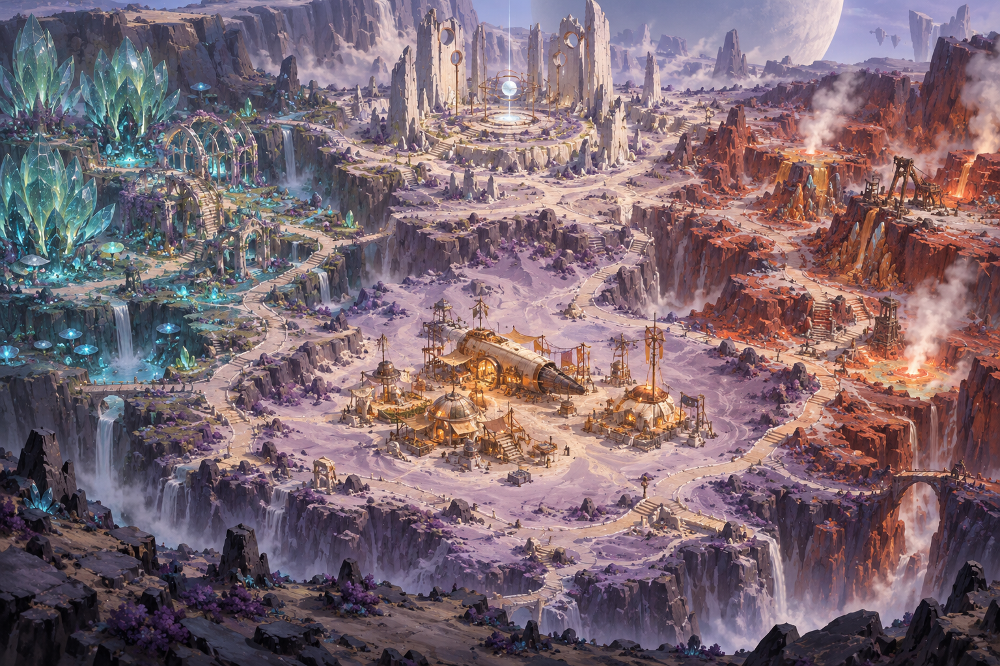

MOONWAKE
Nacre Terrain Studio / Mapgen4 fork
Preparing the valley…
Landscape
Biomes
Walkability
Moisture
Dressing
Top view
Reset camera
Hide dressing
Save image
Visual target · reference

Growing the valley…
—
World extent
—
Sample spacing
—
Terrain triangles
—
Slope-pass area
Drag orbit · Right-drag pan · Scroll zoom
North is −Z · World units are metres